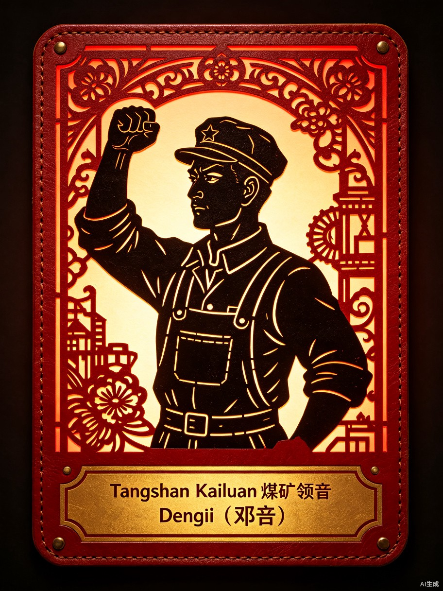
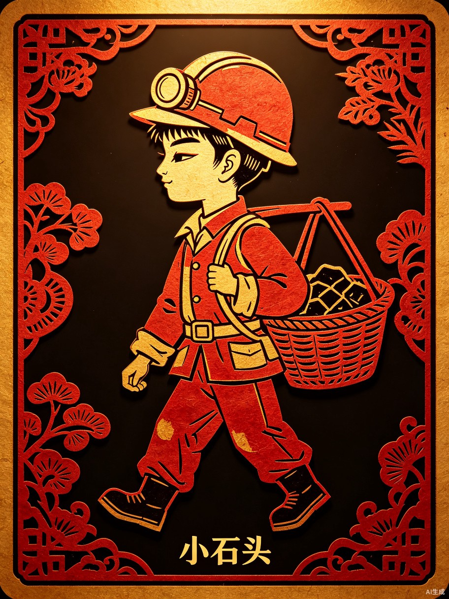
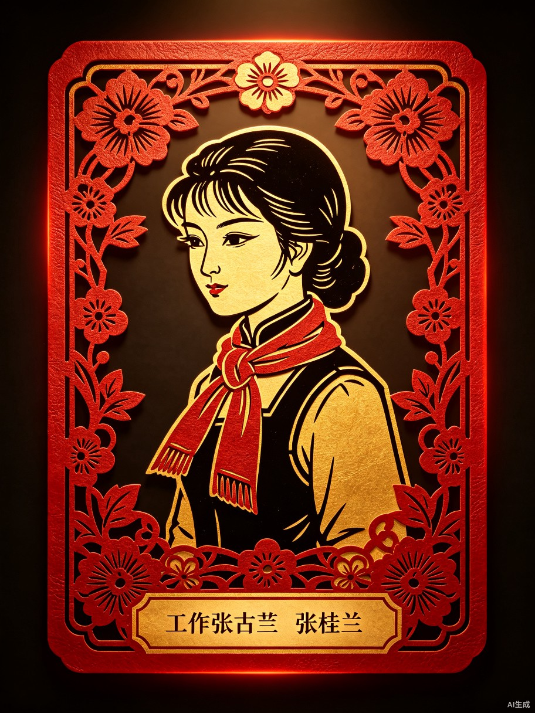
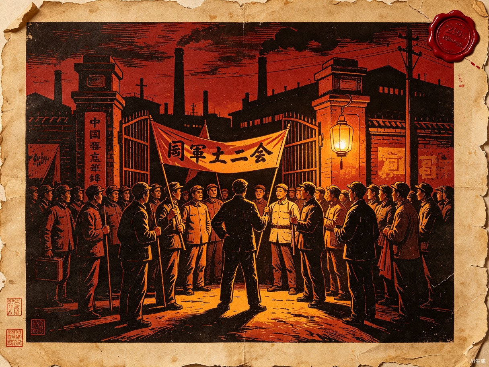
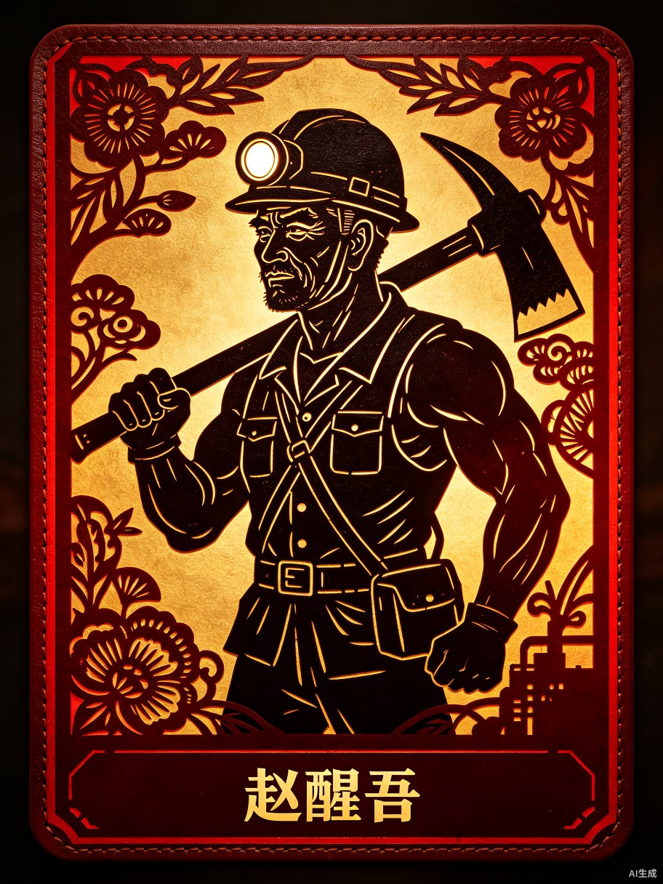
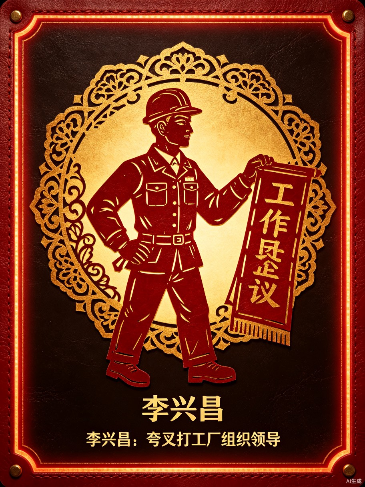

红色史料阅览
冀东皮影是国家级非物质文化遗产，以驴皮镂刻、红金着色、精细刀工著称。以下纹样取自唐山地区传统皮影戏人物与道具的经典造型。

人物
邓培皮影造像
工人领袖造型，握拳姿态，以传统皮影镂刻工艺呈现革命精神。
纹样
花卉祥云纹
皮影戏服装常用的牡丹、祥云镂刻图案，寓意吉祥。

人物
少年矿工皮影
童工造型，头戴矿灯、肩挑煤筐，少年信使形象。

人物
女工皮影造像
女性角色造型，以花卉边框装饰，展现女性力量。
唐山是中国近代工业摇篮之一，开滦煤矿始建于1878年，是中国最早使用机械开采的煤矿。启新水泥厂是中国第一家水泥厂。这些工业遗产见证了中国工人阶级的诞生与成长。
工业遗产
开滦煤矿·赵各庄矿老厂房
始建于1906年的赵各庄矿是开滦五矿之一，1922年五矿大罢工的重要发源地。图中可见英式砖砌厂房、烟囱和运煤铁路。
矿井
井下巷道
矿工劳作的地下世界，高不过一米，煤尘弥漫，支撑木随时可能断裂。
铁路
运煤铁路
中国第一条标准轨距铁路——唐胥铁路连接矿区与港口，是矿工联络各矿的重要通道。
工厂
启新水泥厂
中国第一家水泥厂，1889年建成，生产的"马牌"水泥闻名全国。
矿灯
矿工油灯
早期矿工头戴的油灯，火焰微弱，瓦斯爆炸的隐患时刻威胁生命。
1922年开滦五矿大罢工是中国第一次工人运动高潮中北方最著名的罢工之一，三万多矿工坚持罢工25天，推动了全国工人运动的发展。这里记录了那段可歌可泣的历史。

大罢工
1922年开滦五矿同盟大罢工
10月23日，林西、赵各庄、唐家庄、唐山、秦皇岛五矿三万多工人同时罢工，提出增加工资、改善待遇、承认工会等要求。邓培为总指挥，罗章龙、王尽美等共产党人参与领导。

人物
赵醒吾
一线组织者，带领工人与矿警对峙，串联各矿统一行动。

人物
李星昌
启新水泥厂工人领袖，发起跨行业联合支援大罢工。
遗址
工人夜校旧址
邓培创办的工人夜校，白天做工晚上学文化、学革命道理，培养了大批工人骨干。
文献
罢工宣言
五矿同盟罢工委员会发布的《开滦矿工罢工宣言》，呼吁全国工人阶级支援。